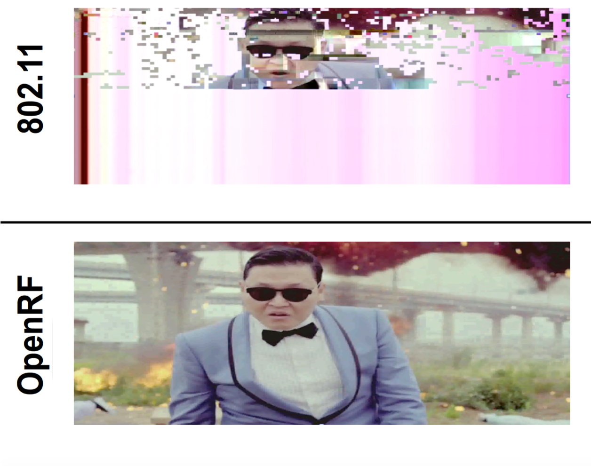

Project: Towards Interference-Free Wireless LANs
|

|
This project aims to address one of the most challenging problems with existing Wi-Fi networks: wireless interference. Wireless spectrum is shared, which is why when a large number of users simultaneously access the medium, their individual communication speeds slows down accordingly. Our research explores new ways to reduce or even eliminate this interference. We develop both solutions to completely redesign wireless infrastructure or make simple software upgrades to existing Wi-Fi infrastructure. The WiTech lab's research has also explored new ways to sense the environment using existing commodity wireless LANs. |
Video Highlight
Publications
- Millimeter-Wave Full Duplex Radios, Vaibhav Singh, Susnata Mondal, Akshay Gadre, Milind Srivastava, Jeyanandh Paramesh and Swarun Kumar, MobiCom 2020 [WEBSITE]
- On the Feasibility of Wi-Fi Based Material Sensing , Diana Zhang, Jingxian Wang, Junsu Jang, Junbo Zhang, Swarun Kumar, MobiCom 2019 [PAPER] [SLIDES] [WEBSITE]
- Adaptive Communication in Multi-Robot Systems Using Directionality of Signal Strength, Stephanie Gil, Swarun Kumar, Dina Katabi and Daniela Rus, International Symposium on Robotics Research (ISRR) 2013 [WEBSITE]
- Bringing Cross-Layer MIMO to Today's Wireless LANs, Swarun Kumar, Diego Cifuentes, Shyamnath Gollakota, and Dina Katabi, ACM SIGCOMM 2013 [PAPER] [SLIDES] [WEBSITE]
- Interference Alignment by Motion, Fadel Adib (Co-primary), Swarun Kumar (Co-primary), Omid Aryan, Shyamnath Gollakota, and Dina Katabi, ACM MOBICOM 2013 [PAPER] [SLIDES] [WEBSITE]
- CarSpeak: A Content-Centric Network for Autonomous Driving, Swarun Kumar, Lixin Shi, Stephanie Gil, Nabeel Ahmed, Dina Katabi, and Daniela Rus, ACM SIGCOMM 2012 [PAPER] [SLIDES] [WEBSITE]
- MegaMIMO: Scaling Wireless Capacity with User Demands, Hariharan Rahul, Swarun Kumar, and Dina Katabi, ACM SIGCOMM 2012 (CACM Research Highlight) [PAPER] [WEBSITE]
Project Participants
- PI: Swarun Kumar
- Students: Diana Zhang and Jingxian Wang
- Collaborators: Prof. Dina Katabi